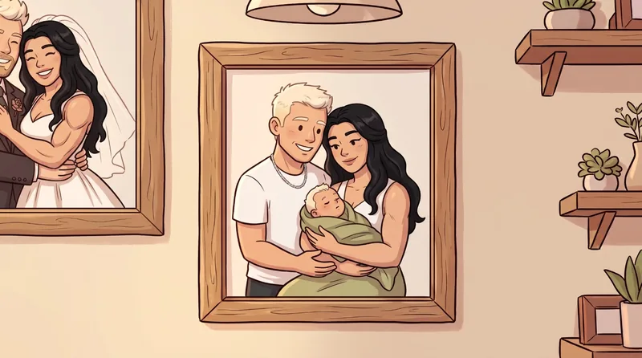
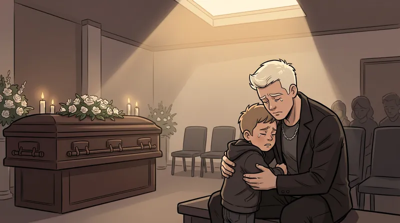
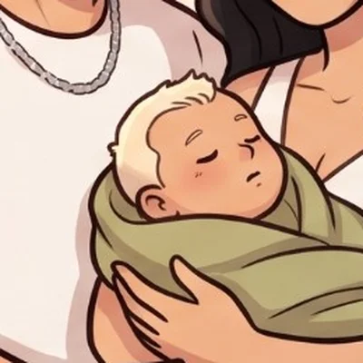

Belo
Dono (contra a vontade)Perdeu o casamento e quase tudo junto. Não entende nada de mercado, mas tem um filho para criar e um prédio inteiro para reerguer.
Antes de vender o primeiro pacote de arroz, o jogo conta em onze cenas como a vida do Belo virou do avesso. Começa com fotos penduradas na parede, porque quem perde tudo fica mesmo olhando para elas, e termina na porta do mercado. As cenas animadas tocam sozinhas, sem som; o botão no canto pausa.

“Naquele dia, Belo acreditava ter encontrado o amor da sua vida.”

“Com o nascimento de Enzo, sua família parecia completa.”
“Mas em pouco tempo uma traição destruiu tudo o que ele havia construído.”
“Anos de amor chegaram ao fim.”
“Grazi seguiu com sua nova paixão, enquanto Belo e seu filho precisavam lidar com as consequências daquela separação.”
“Enquanto Grazi aproveitava sua vida de luxo, Belo enfrentava as dificuldades de recomeçar do zero.”
“Quando acreditou que já havia perdido tudo, recebeu a notícia sobre a morte de seu avô José.”

“Mas José havia deixado uma pequena luz em meio à escuridão para seu neto.”
“O antigo supermercado Korno's não era apenas uma herança. Era sua única chance.”
“Sem dinheiro, sem experiência e sem garantias de sucesso, Belo decidiu lutar pelo futuro que restava para ele e seu filho.”
Cena 11 · a última da abertura
“O destino do Korno's agora está em suas mãos.”
Iniciar jornada
Assim o Belo encontra o mercado do avô: R$ 300,00 em caixa, teto caindo, prateleira vazia e placa de fechado na porta. A primeira tarefa nem é matemática. É vassoura.
A partir daí, cada dia mistura três coisas: um pedaço da história, conversas com quem passa pelo mercado e um minigame em que a conta certa enche o caixa e a conta errada sai do bolso do Belo.
Perdeu o casamento e quase tudo junto. Não entende nada de mercado, mas tem um filho para criar e um prédio inteiro para reerguer.

O motivo de tudo. [PREENCHER: idade e papel do Enzo no jogo]

Explica cada minigame, avisa das promoções e encerra o dia com um “vejo você amanhã!”. Sem ele, o Belo comprava achocolatado pelo preço cheio.
[PREENCHER: nome, quem ela é e em que dia aparece]

O primeiro é este senhor, que só queria levar um arroz de 5 kg para a esposa. [PREENCHER: nome dele e dos outros clientes]
Também fazem parte da história, mesmo sem aparecer no balcão: a Grazi, ex-esposa do Belo; o Maurício, com quem ela foi embora; e o avô José, que deixou o Korno's de herança.